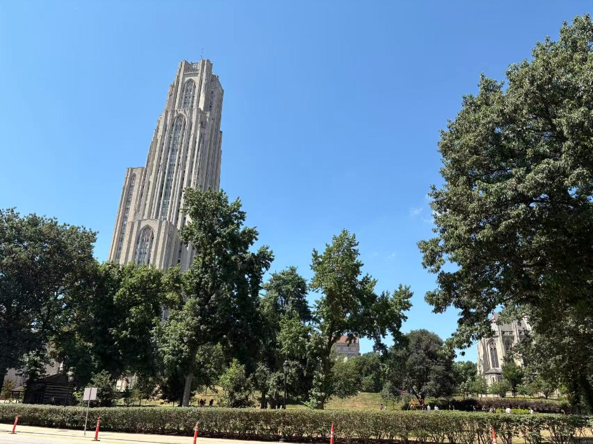
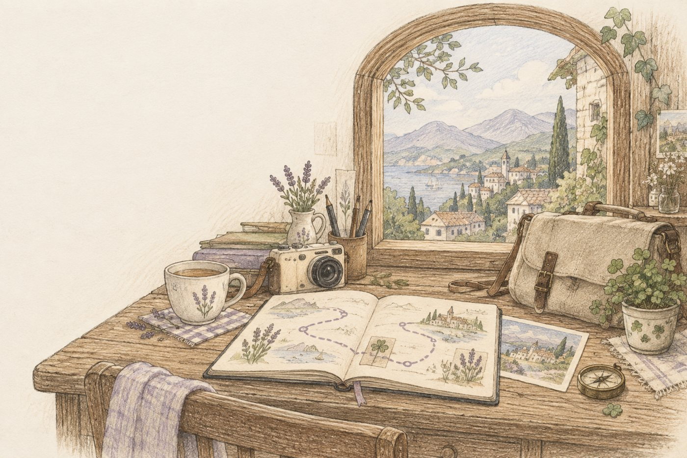

The plan
ok so phipps then warhol??
wait is the cathedral open sat
idk i screenshotted a blog
send it
Fourteen screenshots, one Google Doc nobody opened again, and a group chat named PGH!!!
A travel diary that writes itself
You took 400 photos and remember about six of them. Pinlog puts every trip on a map, catches your photos as they happen, and hands you back a hand-drawn journal and a little film in your own words.
The problem · 0:20
Not badly. Just… nowhere. The plan lived in a group chat, the photos went into the roll, and the video you were going to make is still "going to be made."
So we built the thing we wanted on the way home: a diary that keeps up with the trip, instead of waiting for you after it.
Beat one · plan · 0:45
Friday, 11 pm, on the couch
Pins drop onto the map one by one while the plan is still being written, each with the reason it was picked. Every pin is checked against OpenStreetMap before it lands. The one that can't be verified never appears.
Beat two · photos · 1:15
Saturday, 10:40 am
Drag the Cathedral shot onto the map. The browser reads where and when it was taken, before anything uploads, and it lands on the right pin. A photo with no GPS isn't lost: it waits in the tray.

IMG_0417 · 10:40 · GPS ✓Your map · Saturday
Beat three · journal · 1:45
Saturday, 2 pm, inside the glasshouse
Along the way we wrote three lines. That's all the journal knows. Ask it to summarize the day and it answers from those notes, and shows you which ones. No web search, no invented weather.
Beat four · film · 2:10
Sunday, 9 pm, back home
Pinlog writes the script from the pins and notes, records a voice, and plays a film: a title, a flyover between pins, your photos with a slow drift, and an outro that draws the whole route.
The promise · 2:45
No stock footage. No invented weather. No "vibrant city known for its bridges."

Pinlog is a HackCMU 2026 project. Plan a trip on your own phone in under a minute, then watch it become a film before you leave the table.